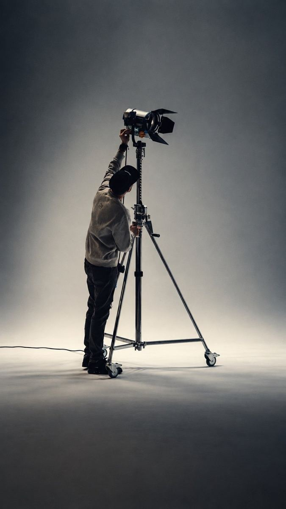
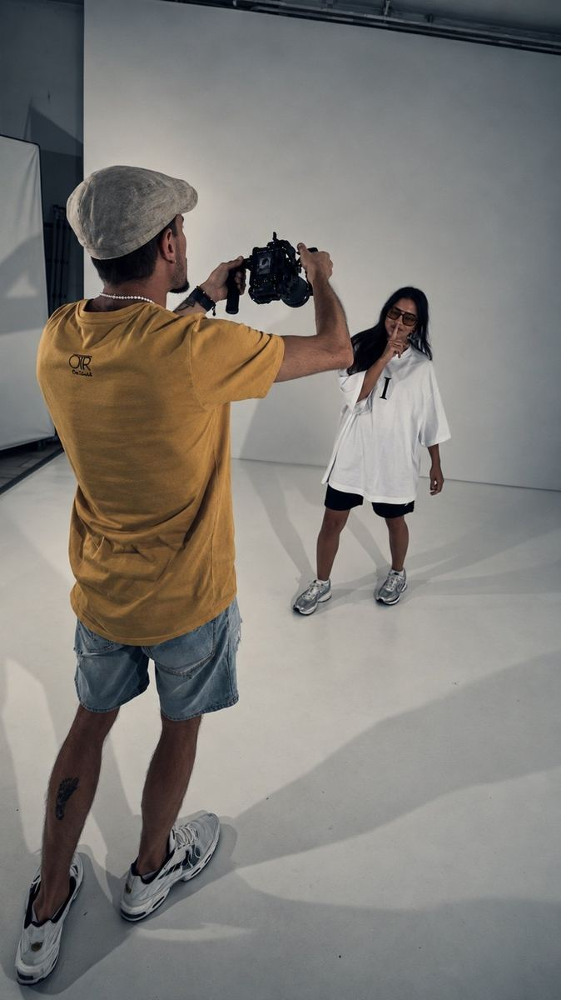
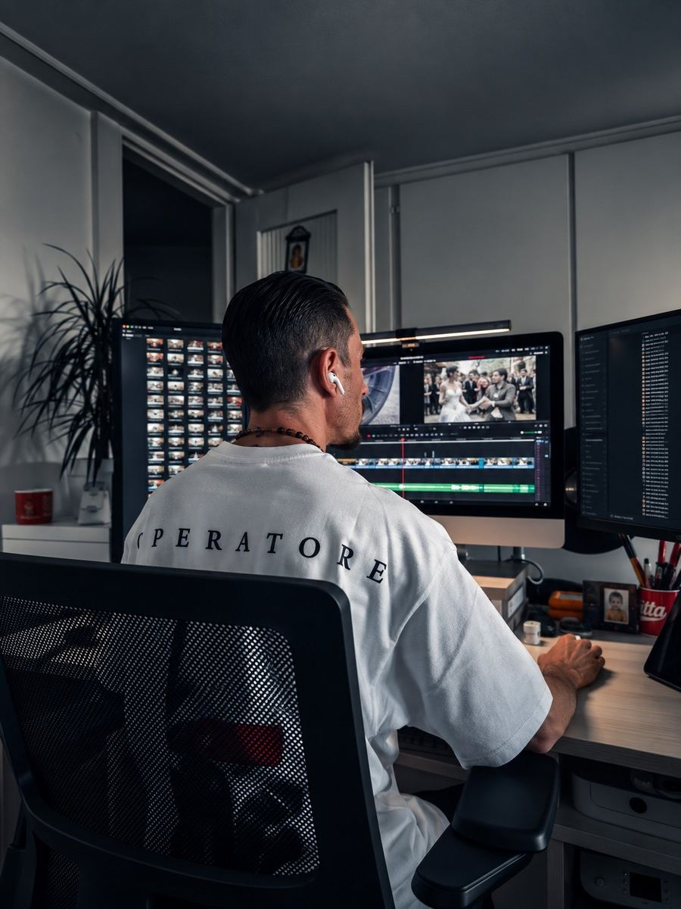

Die Person hinter der Kamera
Über mich
Milan P. J. Bachofner
Milan Paul Jacques Bachofner wurde am 3. Oktober 1988 geboren und wuchs in den Niederlanden auf. Als Sohn einer Schweizer Mutter und eines tschechischen Vaters wurde er schon früh von unterschiedlichen Kulturen geprägt. Als kleiner Junge wurde er in Paris vom buddhistischen Mönch Chao Saysanak Na Champassak gesegnet. Kreativität, Zeichnen und Technik begleiten ihn seit seiner Kindheit. Später kam der starke Wunsch hinzu, die Welt zu entdecken.
Heute arbeitet Milan als freiberuflicher Fotograf und Videograf in der Schweiz unter dem Namen OTR-OnTouR by Milan Bachofner. Für Marken, Künstler, Restaurants, Hochzeiten, Veranstaltungen und soziale Medien realisiert er Foto- und Videoproduktionen von der ersten Idee bis zum fertigen Ergebnis – von der Konzeptentwicklung über die Produktion bis zur abschliessenden Nachbearbeitung.


